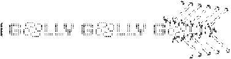
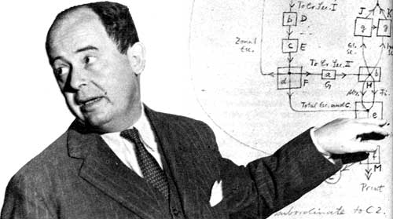
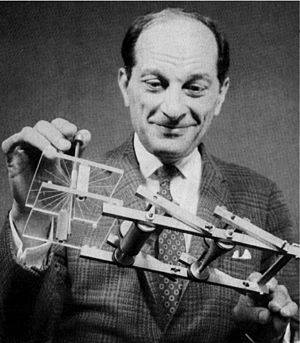

Golly Game of Life

The birth of cellular automata came from the work of two colleges at the Los Alamos National Laboratory, John von Neumann and Stanislaw Ulam. In the 40's Ulam was studying the growth of crystals using a two dimensional lattice model while von Neumann was working on the problem of self-replicating systems, with an initial design that considered the difficulties of a robot tasked with building another robot.
In the 50's they were working together to calculate liquid motion by breaking a liquid up into groups of discrete units and observing the motion of each unit based on its neighbor's behavior. This was the first developed system of cellular automata, the concept of grids of cells exhibiting finite states and acted upon by neighboring cells.
The concept remained primarily an interest in the academic community as a mathematical and modelling tool until the 70's when John Conway popularized cellular automata amongst the early computing community with his Game of Life.
John von Neumann
Stanislaw Ulam
